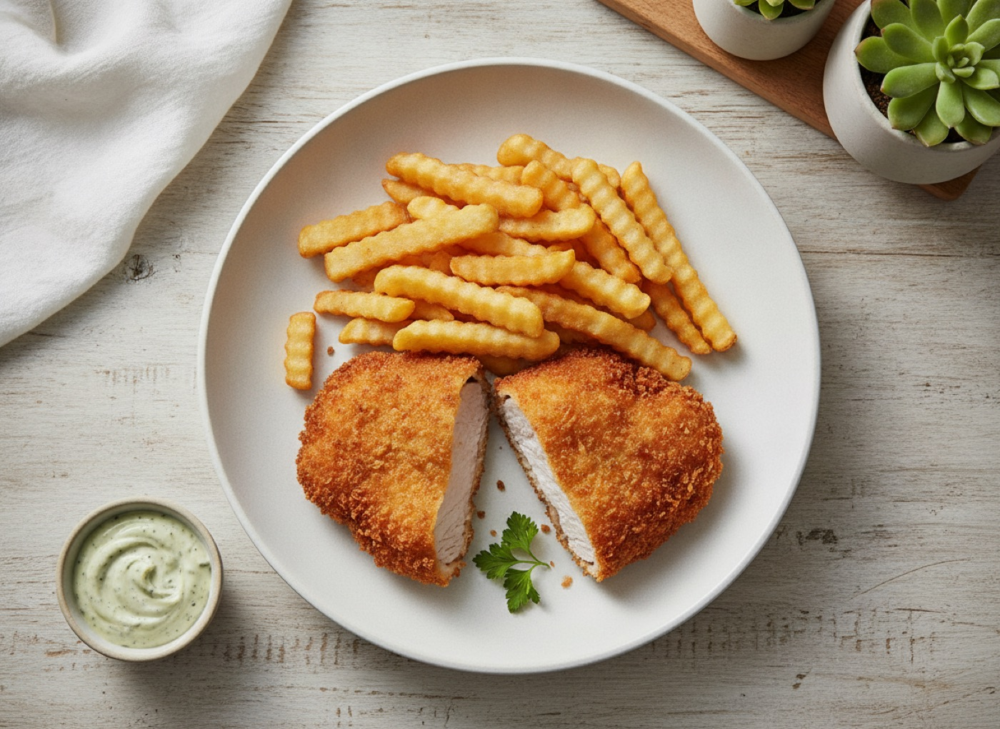
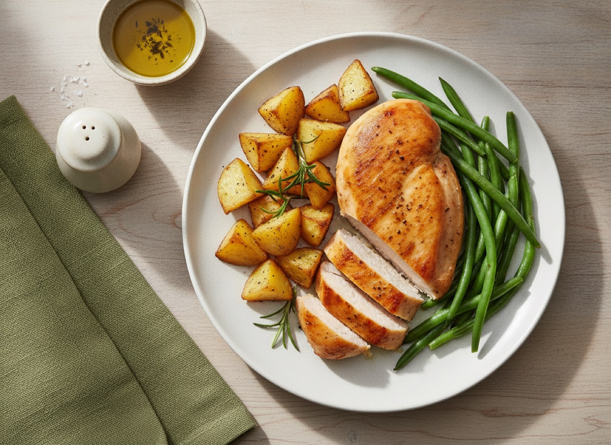
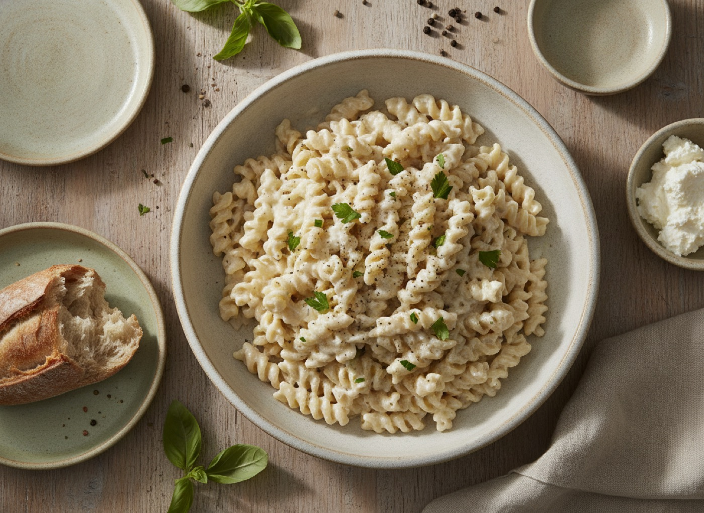
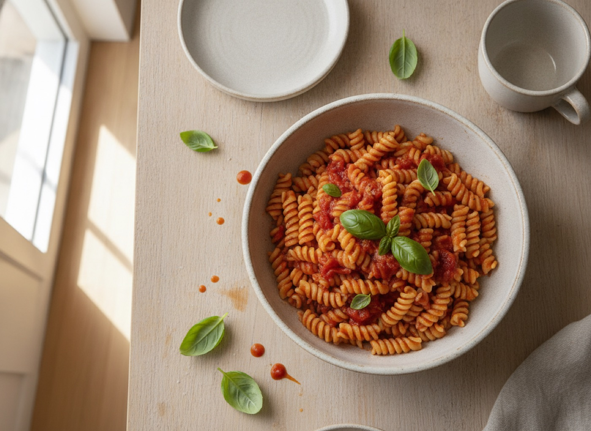

Egyszerű csere, ami átlagosan 5–25 g zsírt vesz ki egy étkezésből. A számok becslések, a receptoldalak alapértékeiből számolva, a konkrét termék csomagolása felülírja őket.


Bő olajban sült helyett sütőben sült: egyetlen fogáson 15–25 g.


Tejszín helyett paradicsom vagy joghurt: egy szószon 5–30 g.
| Ehelyett | Ezt | Nyereség (becslés) |
|---|---|---|
| szalonnás rántotta 2 tojásból | buggyantott tojás + 1 fehérje, paradicsommal | kb. 10–12 g |
| vajas pirítós | paradicsomos vagy túrós pirítós | kb. 8 g (10 g vaj) |
| croissant, túrós batyu | teljes kiőrlésű kenyér túrókrémmel | kb. 10–14 g |
| kolbász, szalonna, felvágott | sovány sonka vagy túrókrém | kb. 10–20 g |
| habos, tejszínes kávé | kávé 1,5%-os tejjel | kb. 5–8 g |
| Ehelyett | Ezt | Nyereség (becslés) |
|---|---|---|
| rántott hús | sütőben sült vagy grillserpenyős filé | kb. 15–25 g |
| bundázott hal | sütőben sült hal citrommal | kb. 12–18 g |
| hasábburgonya | sütőben sült burgonyakocka 1 tk olajjal | kb. 10–15 g |
| tejszínes mártás | paradicsomos vagy joghurtos öntet | kb. 25–30 g (1 dl tejszín) |
| tejföllel habart főzelék | joghurttal habart főzelék | kb. 5,5 g |
| majonézes saláta | joghurtos öntetű saláta | kb. 15–20 g |
| kacsa, csülök, zsíros sertés | csirkemell, pulykamell, fehér húsú hal | kb. 15–25 g |
| rakott étel sok sajttal | zöldséges rakott étel sovány túróval | kb. 10–15 g |
| olajban sült hagyma a tetejére | sütőben pirított hagyma | kb. 8–10 g |
| Ehelyett | Ezt | Nyereség (becslés) |
|---|---|---|
| chips, sós mogyoró | rizskeksz, nyers zöldség | kb. 15–30 g |
| csokoládé 50 g | sült alma fahéjjal, gyümölcs | kb. 15 g |
| vajas-krémes sütemény | túrós-gyümölcsös pohárkrém | kb. 15–20 g |
| fagylalt, jégkrém | fagyasztott bogyós joghurttal | kb. 8–12 g |
| kekszes-tejszínes desszert | joghurtos bogyós pohár | kb. 15 g |
 Könnyű Konyha
Könnyű Konyha